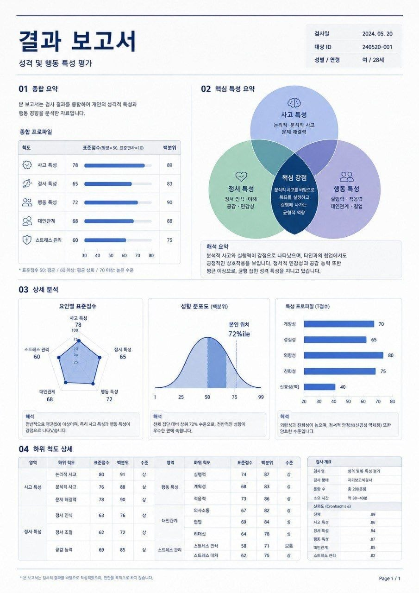
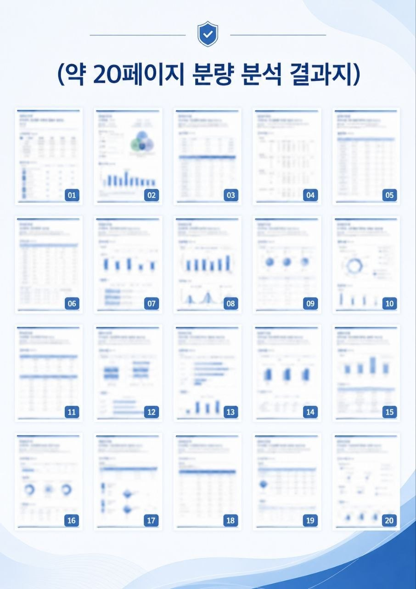
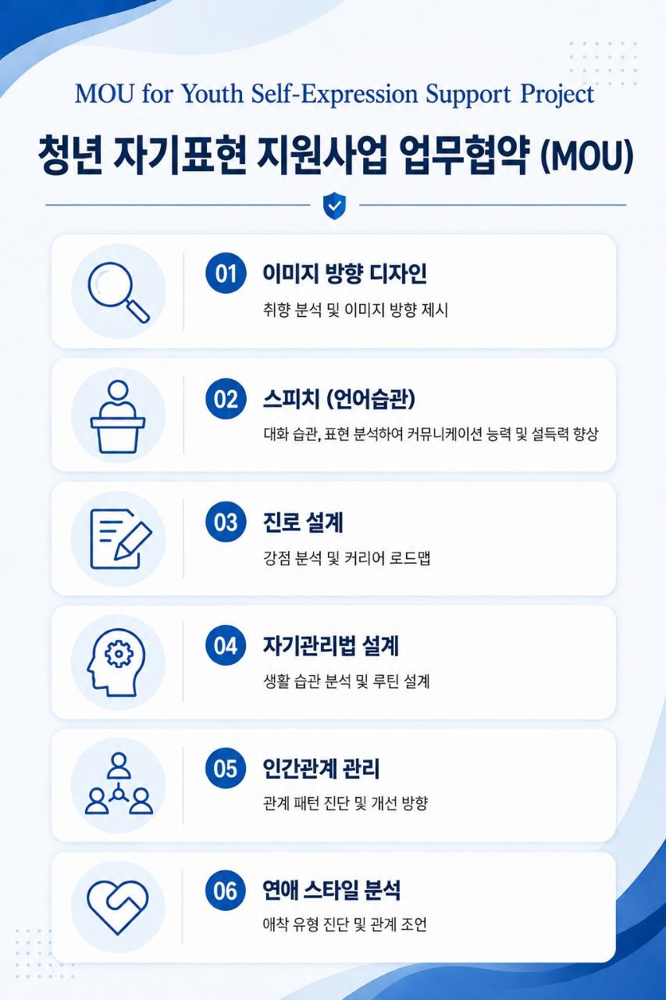

정부, 연구소, 청년단체의 상생 협력 모델 및 참여 현황입니다.
본 공동연구는 청년들이 직면한 다양한 사회 문제를 효과적으로 발굴하고 해결하기 위해 정부, 연구소, 청년단체가 각자의 전문성과 현장성을 바탕으로 연결되는 상생 협력 모델입니다.
정부가 사회 현장에서 필요한 문제와 정책적 과제를 발굴하면, 연구소는 이를 바탕으로 전문적인 연구와 데이터 분석을 수행하고, 청년단체는 실제 청년들의 목소리와 현장 경험을 연구 과정에 연결합니다.
특히 연구소는 보조 연구원을 별도로 모집하여 연구 조직을 구성하고, 다양한 전공과 배경을 가진 청년 인재들이 실제 연구 과정에 참여할 수 있도록 합니다.
이를 통해 단순히 연구 결과를 만들어내는 것을 넘어, 청년 연구 인재를 발굴하고 성장시키는 동시에 현장의 문제를 연구로 연결하는 지속 가능한 연구 생태계를 구축합니다.
정부의 정책적 문제의식
연구소의 전문 역량
청년단체의 현장성 연결
정책 적용 및 순환
정부의 정책적 문제의식, 연구소의 전문적인 연구 역량, 청년단체의 현장성과 참여가 하나의 과정으로 연결됩니다. 이를 통해 청년의 실제 문제를 연구하고, 연구 결과를 정책과 현장에 적용하며, 다시 새로운 사회 문제를 발굴하는 선순환 구조를 만들어갑니다.
[불확실성 제어 행동패턴 분석 프로젝트]
우리는 모든 사회 문제의 근본적인 원인이 '불확실성(Uncertainty)'에 있다고 봅니다.
본 연구 프로그램에 참여하시면, 본인 스스로의 불확실성을 객관적으로 마주하고 제거하는 자기분석 및 행동패턴 분석 솔루션을 무상으로 제공받습니다. 동시에 여러분의 행동 데이터는 향후 더 나은 청년 정책을 위한 귀중한 연구 자료로 활용됩니다.
실제 컨설팅 및 연구 결과물로 제공되는 프레임워크 샘플 (임지 3장) 입니다.


